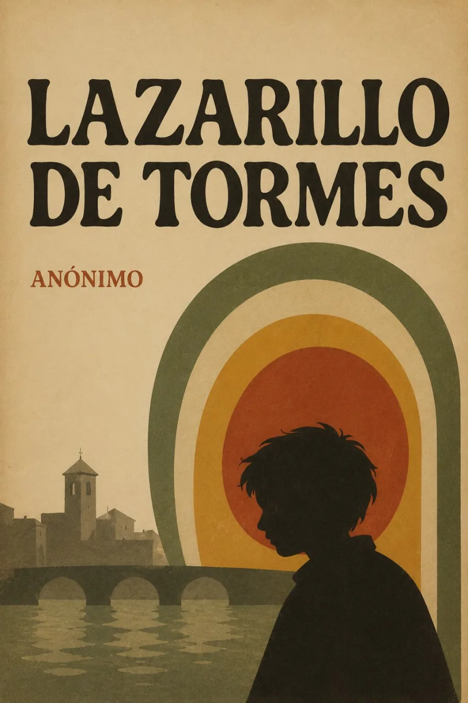

SINOPSIS
Lázaro cuenta su vida a «Vuestra Merced» para explicar un caso que compromete su honra. Desde la infancia junto al Tormes hasta su oficio de pregonero en Toledo, el hambre organiza su aprendizaje: servir a un ciego, a un clérigo o a un escudero significa descubrir las distancias entre la apariencia y el sustento, entre la autoridad moral y la conducta.
La ironía nace también de quien recuerda. El adulto que presenta su ascenso social deja al lector la tarea de reconocer sus concesiones y silencios. Esta ficción autobiográfica anónima, fundamental para la tradición picaresca, se conserva en cuatro ediciones de 1554; su autoría sigue sin establecerse de forma concluyente.
Historia editorial y ejemplares: Biblioteca Nacional de España. Las ediciones conocidas más antiguas son de 1554.
CAPÍTULOS
Tratado primero: el ciego
Tratado segundo: el clérigo avaro
Tratado tercero: el escudero
Tratado cuarto: el fraile de la Merced
Tratado quinto: el buldero
Tratado sexto: el capellán
Tratado séptimo: pregonero real
RESEÑAS

Excelente